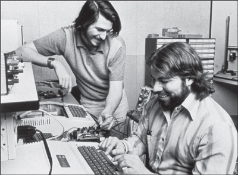

ODD COUPLE
The Two Steves

Jobs and Wozniak in the garage, 1976
While a student in McCollum's class, Jobs became friends with a graduate who was the teacher's all-time favorite and a school legend for his wizardry in the class. Stephen Wozniak, whose younger brother had been on a swim team with Jobs, was almost five years older than Jobs and far more knowledgeable about electronics. But emotionally and socially he was still a high school geek.
Like Jobs, Wozniak learned a lot at his father's knee. But their lessons were different. Paul Jobs was a high school dropout who, when fixing up cars, knew how to turn a tidy profit by striking the right deal on parts. Francis Wozniak, known as Jerry, was a brilliant engineering graduate from Cal Tech, where he had quarterbacked the football team, who became a rocket scientist at Lockheed. He exalted engineering and looked down on those in business, marketing, and sales. "I remember him telling me that engineering was the highest level of importance you could reach in the world," Steve Wozniak later recalled. "It takes society to a new level."
One of Steve Wozniak's first memories was going to his father's workplace on a weekend and being shown electronic parts, with his dad "putting them on a table with me so I got to play with them." He watched with fascination as his father tried to get a waveform line on a video screen to stay flat so he could show that one of his circuit designs was working properly. "I could see that whatever my dad was doing, it was important and good." Woz, as he was known even then, would ask about the resistors and transistors lying around the house, and his father would pull out a blackboard to illustrate what they did. "He would explain what a resistor was by going all the way back to atoms and electrons. He explained how resistors worked when I was in second grade, not by equations but by having me picture it."
Woz's father taught him something else that became ingrained in his childlike, socially awkward personality: Never lie. "My dad believed in honesty. Extreme honesty. That's the biggest thing he taught me. I never lie, even to this day." (The only partial exception was in the service of a good practical joke.) In addition, he imbued his son with an aversion to extreme ambition, which set Woz apart from Jobs. At an Apple product launch event in 2010, forty years after they met, Woz reflected on their differences. "My father told me, ‘You always want to be in the middle,'" he said. "I didn't want to be up with the high-level people like Steve. My dad was an engineer, and that's what I wanted to be. I was way too shy ever to be a business leader like Steve."
By fourth grade Wozniak became, as he put it, one of the "electronics kids." He had an easier time making eye contact with a transistor than with a girl, and he developed the chunky and stooped look of a guy who spends most of his time hunched over circuit boards. At the same age when Jobs was puzzling over a carbon microphone that his dad couldn't explain, Wozniak was using transistors to build an intercom system featuring amplifiers, relays, lights, and buzzers that connected the kids' bedrooms of six houses in the neighborhood. And at an age when Jobs was building Heathkits, Wozniak was assembling a transmitter and receiver from Hallicrafters, the most sophisticated radios available.
Woz spent a lot of time at home reading his father's electronics journals, and he became enthralled by stories about new computers, such as the powerful ENIAC. Because Boolean algebra came naturally to him, he marveled at how simple, rather than complex, the computers were. In eighth grade he built a calculator that included one hundred transistors, two hundred diodes, and two hundred resistors on ten circuit boards. It won top prize in a local contest run by the Air Force, even though the competitors included students through twelfth grade.
Woz became more of a loner when the boys his age began going out with girls and partying, endeavors that he found far more complex than designing circuits. "Where before I was popular and riding bikes and everything, suddenly I was socially shut out," he recalled. "It seemed like nobody spoke to me for the longest time." He found an outlet by playing juvenile pranks. In twelfth grade he built an electronic metronome—one of those tick-tick-tick devices that keep time in music class—and realized it sounded like a bomb. So he took the labels off some big batteries, taped them together, and put it in a school locker; he rigged it to start ticking faster when the locker opened. Later that day he got called to the principal's office. He thought it was because he had won, yet again, the school's top math prize. Instead he was confronted by the police. The principal had been summoned when the device was found, bravely ran onto the football field clutching it to his chest, and pulled the wires off. Woz tried and failed to suppress his laughter. He actually got sent to the juvenile detention center, where he spent the night. It was a memorable experience. He taught the other prisoners how to disconnect the wires leading to the ceiling fans and connect them to the bars so people got shocked when touching them.
Getting shocked was a badge of honor for Woz. He prided himself on being a hardware engineer, which meant that random shocks were routine. He once devised a roulette game where four people put their thumbs in a slot; when the ball landed, one would get shocked. "Hardware guys will play this game, but software guys are too chicken," he noted.
During his senior year he got a part-time job at Sylvania and had the chance to work on a computer for the first time. He learned FORTRAN from a book and read the manuals for most of the systems of the day, starting with the Digital Equipment PDP-8. Then he studied the specs for the latest microchips and tried to redesign the computers using these newer parts. The challenge he set himself was to replicate the design using the fewest components possible. Each night he would try to improve his drawing from the night before. By the end of his senior year, he had become a master. "I was now designing computers with half the number of chips the actual company had in their own design, but only on paper." He never told his friends. After all, most seventeen-year-olds were getting their kicks in other ways.
On Thanksgiving weekend of his senior year, Wozniak visited the University of Colorado. It was closed for the holiday, but he found an engineering student who took him on a tour of the labs. He begged his father to let him go there, even though the out-of-state tuition was more than the family could easily afford. They struck a deal: He would be allowed to go for one year, but then he would transfer to De Anza Community College back home. After arriving at Colorado in the fall of 1969, he spent so much time playing pranks (such as producing reams of printouts saying "Fuck Nixon") that he failed a couple of his courses and was put on probation. In addition, he created a program to calculate Fibonacci numbers that burned up so much computer time the university threatened to bill him for the cost. So he readily lived up to his bargain with his parents and transferred to De Anza.
After a pleasant year at De Anza, Wozniak took time off to make some money. He found work at a company that made computers for the California Motor Vehicle Department, and a coworker made him a wonderful offer: He would provide some spare chips so Wozniak could make one of the computers he had been sketching on paper. Wozniak decided to use as few chips as possible, both as a personal challenge and because he did not want to take advantage of his colleague's largesse.
Much of the work was done in the garage of a friend just around the corner, Bill Fernandez, who was still at Homestead High. To lubricate their efforts, they drank large amounts of Cragmont cream soda, riding their bikes to the Sunnyvale Safeway to return the bottles, collect the deposits, and buy more. "That's how we started referring to it as the Cream Soda Computer," Wozniak recalled. It was basically a calculator capable of multiplying numbers entered by a set of switches and displaying the results in binary code with little lights.
When it was finished, Fernandez told Wozniak there was someone at Homestead High he should meet. "His name is Steve. He likes to do pranks like you do, and he's also into building electronics like you are." It may have been the most significant meeting in a Silicon Valley garage since Hewlett went into Packard's thirty-two years earlier. "Steve and I just sat on the sidewalk in front of Bill's house for the longest time, just sharing stories—mostly about pranks we'd pulled, and also what kind of electronic designs we'd done," Wozniak recalled. "We had so much in common. Typically, it was really hard for me to explain to people what kind of design stuff I worked on, but Steve got it right away. And I liked him. He was kind of skinny and wiry and full of energy." Jobs was also impressed. "Woz was the first person I'd met who knew more electronics than I did," he once said, stretching his own expertise. "I liked him right away. I was a little more mature than my years, and he was a little less mature than his, so it evened out. Woz was very bright, but emotionally he was my age."
In addition to their interest in computers, they shared a passion for music. "It was an incredible time for music," Jobs recalled. "It was like living at a time when Beethoven and Mozart were alive. Really. People will look back on it that way. And Woz and I were deeply into it." In particular, Wozniak turned Jobs on to the glories of Bob Dylan. "We tracked down this guy in Santa Cruz who put out this newsletter on Dylan," Jobs said. "Dylan taped all of his concerts, and some of the people around him were not scrupulous, because soon there were tapes all around. Bootlegs of everything. And this guy had them all."
Hunting down Dylan tapes soon became a joint venture. "The two of us would go tramping through San Jose and Berkeley and ask about Dylan bootlegs and collect them," said Wozniak. "We'd buy brochures of Dylan lyrics and stay up late interpreting them. Dylan's words struck chords of creative thinking." Added Jobs, "I had more than a hundred hours, including every concert on the '65 and '66 tour," the one where Dylan went electric. Both of them bought high-end TEAC reel-to-reel tape decks. "I would use mine at a low speed to record many concerts on one tape," said Wozniak. Jobs matched his obsession: "Instead of big speakers I bought a pair of awesome headphones and would just lie in my bed and listen to that stuff for hours."
Jobs had formed a club at Homestead High to put on music-and-light shows and also play pranks. (They once glued a gold-painted toilet seat onto a flower planter.) It was called the Buck Fry Club, a play on the name of the principal. Even though they had already graduated, Wozniak and his friend Allen Baum joined forces with Jobs, at the end of his junior year, to produce a farewell gesture for the departing seniors. Showing off the Homestead campus four decades later, Jobs paused at the scene of the escapade and pointed. "See that balcony? That's where we did the banner prank that sealed our friendship." On a big bedsheet Baum had tie-dyed with the school's green and white colors, they painted a huge hand flipping the middle-finger salute. Baum's nice Jewish mother helped them draw it and showed them how to do the shading and shadows to make it look more real. "I know what that is," she snickered. They devised a system of ropes and pulleys so that it could be dramatically lowered as the graduating class marched past the balcony, and they signed it "SWAB JOB," the initials of Wozniak and Baum combined with part of Jobs's name. The prank became part of school lore—and got Jobs suspended one more time.
Another prank involved a pocket device Wozniak built that could emit TV signals. He would take it to a room where a group of people were watching TV, such as in a dorm, and secretly press the button so that the screen would get fuzzy with static. When someone got up and whacked the set, Wozniak would let go of the button and the picture would clear up. Once he had the unsuspecting viewers hopping up and down at his will, he would make things harder. He would keep the picture fuzzy until someone touched the antenna. Eventually he would make people think they had to hold the antenna while standing on one foot or touching the top of the set. Years later, at a keynote presentation where he was having his own trouble getting a video to work, Jobs broke from his script and recounted the fun they had with the device. "Woz would have it in his pocket and we'd go into a dorm ... where a bunch of folks would be, like, watching Star Trek, and he'd screw up the TV, and someone would go up to fix it, and just as they had the foot off the ground he would turn it back on, and as they put their foot back on the ground he'd screw it up again." Contorting himself into a pretzel onstage, Jobs concluded to great laughter, "And within five minutes he would have someone like this."
The ultimate combination of pranks and electronics—and the escapade that helped to create Apple—was launched one Sunday afternoon when Wozniak read an article in Esquire that his mother had left for him on the kitchen table. It was September 1971, and he was about to drive off the next day to Berkeley, his third college. The story, Ron Rosenbaum's "Secrets of the Little Blue Box," described how hackers and phone phreakers had found ways to make long-distance calls for free by replicating the tones that routed signals on the AT&T network. "Halfway through the article, I had to call my best friend, Steve Jobs, and read parts of this long article to him," Wozniak recalled. He knew that Jobs, then beginning his senior year, was one of the few people who would share his excitement.
A hero of the piece was John Draper, a hacker known as Captain Crunch because he had discovered that the sound emitted by the toy whistle that came with the breakfast cereal was the same 2600 Hertz tone used by the phone network's call-routing switches. It could fool the system into allowing a long-distance call to go through without extra charges. The article revealed that other tones that served to route calls could be found in an issue of the Bell System Technical Journal, which AT&T immediately began asking libraries to pull from their shelves.
As soon as Jobs got the call from Wozniak that Sunday afternoon, he knew they would have to get their hands on the technical journal right away. "Woz picked me up a few minutes later, and we went to the library at SLAC [the Stanford Linear Accelerator Center] to see if we could find it," Jobs recounted. It was Sunday and the library was closed, but they knew how to get in through a door that was rarely locked. "I remember that we were furiously digging through the stacks, and it was Woz who finally found the journal with all the frequencies. It was like, holy shit, and we opened it and there it was. We kept saying to ourselves, ‘It's real. Holy shit, it's real.' It was all laid out—the tones, the frequencies."
Wozniak went to Sunnyvale Electronics before it closed that evening and bought the parts to make an analog tone generator. Jobs had built a frequency counter when he was part of the HP Explorers Club, and they used it to calibrate the desired tones. With a dial, they could replicate and tape-record the sounds specified in the article. By midnight they were ready to test it. Unfortunately the oscillators they used were not quite stable enough to replicate the right chirps to fool the phone company. "We could see the instability using Steve's frequency counter," recalled Wozniak, "and we just couldn't make it work. I had to leave for Berkeley the next morning, so we decided I would work on building a digital version once I got there."
No one had ever created a digital version of a Blue Box, but Woz was made for the challenge. Using diodes and transistors from Radio Shack, and with the help of a music student in his dorm who had perfect pitch, he got it built before Thanksgiving. "I have never designed a circuit I was prouder of," he said. "I still think it was incredible."
One night Wozniak drove down from Berkeley to Jobs's house to try it. They attempted to call Wozniak's uncle in Los Angeles, but they got a wrong number. It didn't matter; their device had worked. "Hi! We're calling you for free! We're calling you for free!" Wozniak shouted. The person on the other end was confused and annoyed. Jobs chimed in, "We're calling from California! From California! With a Blue Box." This probably baffled the man even more, since he was also in California.
At first the Blue Box was used for fun and pranks. The most daring of these was when they called the Vatican and Wozniak pretended to be Henry Kissinger wanting to speak to the pope. "Ve are at de summit meeting in Moscow, and ve need to talk to de pope," Woz intoned. He was told that it was 5:30 a.m. and the pope was sleeping. When he called back, he got a bishop who was supposed to serve as the translator. But they never actually got the pope on the line. "They realized that Woz wasn't Henry Kissinger," Jobs recalled. "We were at a public phone booth."
It was then that they reached an important milestone, one that would establish a pattern in their partnerships: Jobs came up with the idea that the Blue Box could be more than merely a hobby; they could build and sell them. "I got together the rest of the components, like the casing and power supply and keypads, and figured out how we could price it," Jobs said, foreshadowing roles he would play when they founded Apple. The finished product was about the size of two decks of playing cards. The parts cost about $40, and Jobs decided they should sell it for $150.
Following the lead of other phone phreaks such as Captain Crunch, they gave themselves handles. Wozniak became "Berkeley Blue," Jobs was "Oaf Tobark." They took the device to college dorms and gave demonstrations by attaching it to a phone and speaker. While the potential customers watched, they would call the Ritz in London or a dial-a-joke service in Australia. "We made a hundred or so Blue Boxes and sold almost all of them," Jobs recalled.
The fun and profits came to an end at a Sunnyvale pizza parlor. Jobs and Wozniak were about to drive to Berkeley with a Blue Box they had just finished making. Jobs needed money and was eager to sell, so he pitched the device to some guys at the next table. They were interested, so Jobs went to a phone booth and demonstrated it with a call to Chicago. The prospects said they had to go to their car for money. "So we walk over to the car, Woz and me, and I've got the Blue Box in my hand, and the guy gets in, reaches under the seat, and he pulls out a gun," Jobs recounted. He had never been that close to a gun, and he was terrified. "So he's pointing the gun right at my stomach, and he says, ‘Hand it over, brother.' My mind raced. There was the car door here, and I thought maybe I could slam it on his legs and we could run, but there was this high probability that he would shoot me. So I slowly handed it to him, very carefully." It was a weird sort of robbery. The guy who took the Blue Box actually gave Jobs a phone number and said he would try to pay for it if it worked. When Jobs later called the number, the guy said he couldn't figure out how to use it. So Jobs, in his felicitous way, convinced the guy to meet him and Wozniak at a public place. But they ended up deciding not to have another encounter with the gunman, even on the off chance they could get their $150.
The partnership paved the way for what would be a bigger adventure together. "If it hadn't been for the Blue Boxes, there wouldn't have been an Apple," Jobs later reflected. "I'm 100% sure of that. Woz and I learned how to work together, and we gained the confidence that we could solve technical problems and actually put something into production." They had created a device with a little circuit board that could control billions of dollars' worth of infrastructure. "You cannot believe how much confidence that gave us." Woz came to the same conclusion: "It was probably a bad idea selling them, but it gave us a taste of what we could do with my engineering skills and his vision." The Blue Box adventure established a template for a partnership that would soon be born. Wozniak would be the gentle wizard coming up with a neat invention that he would have been happy just to give away, and Jobs would figure out how to make it user-friendly, put it together in a package, market it, and make a few bucks.